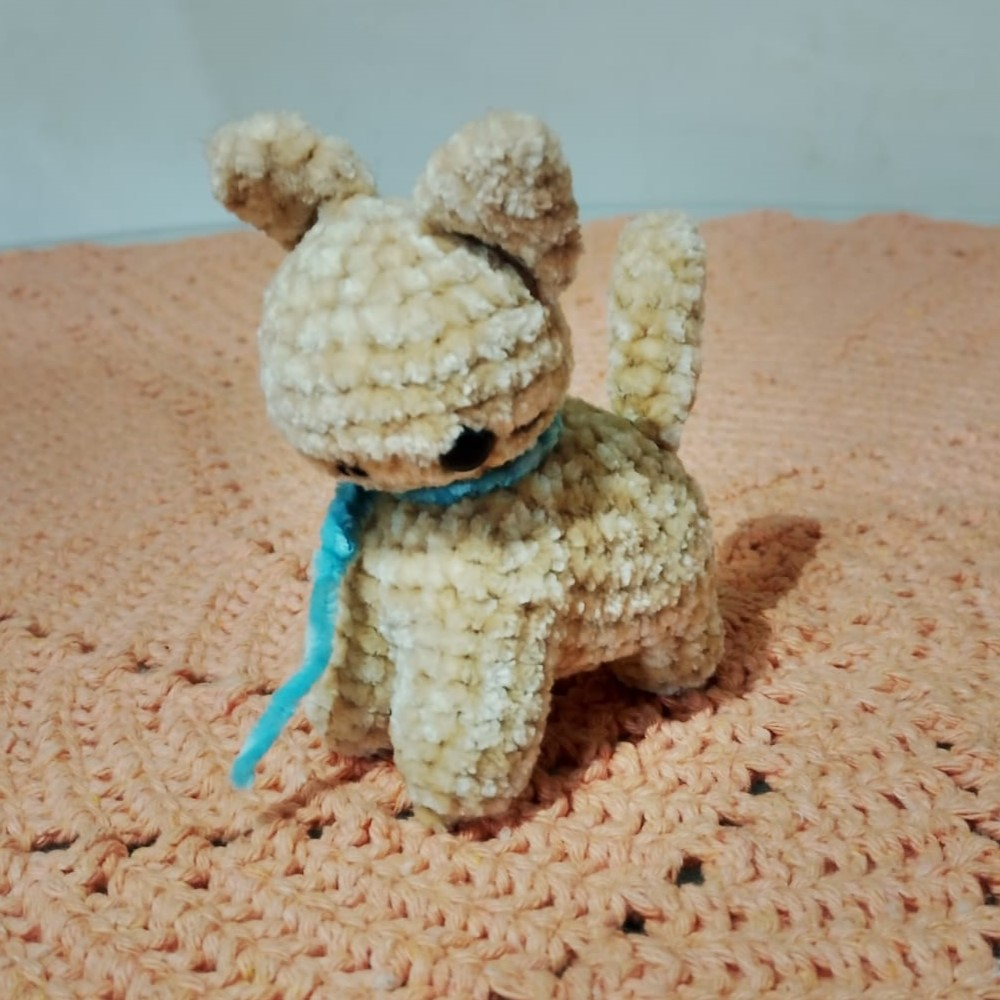
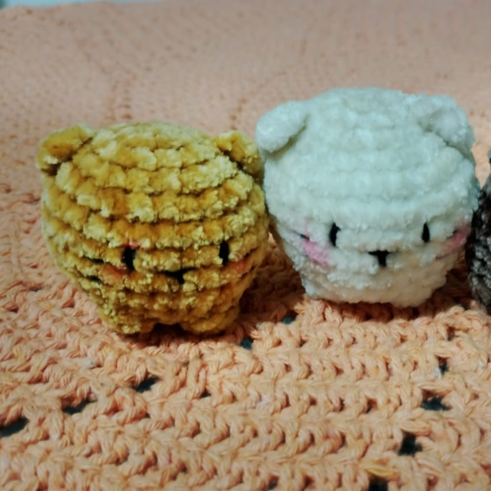
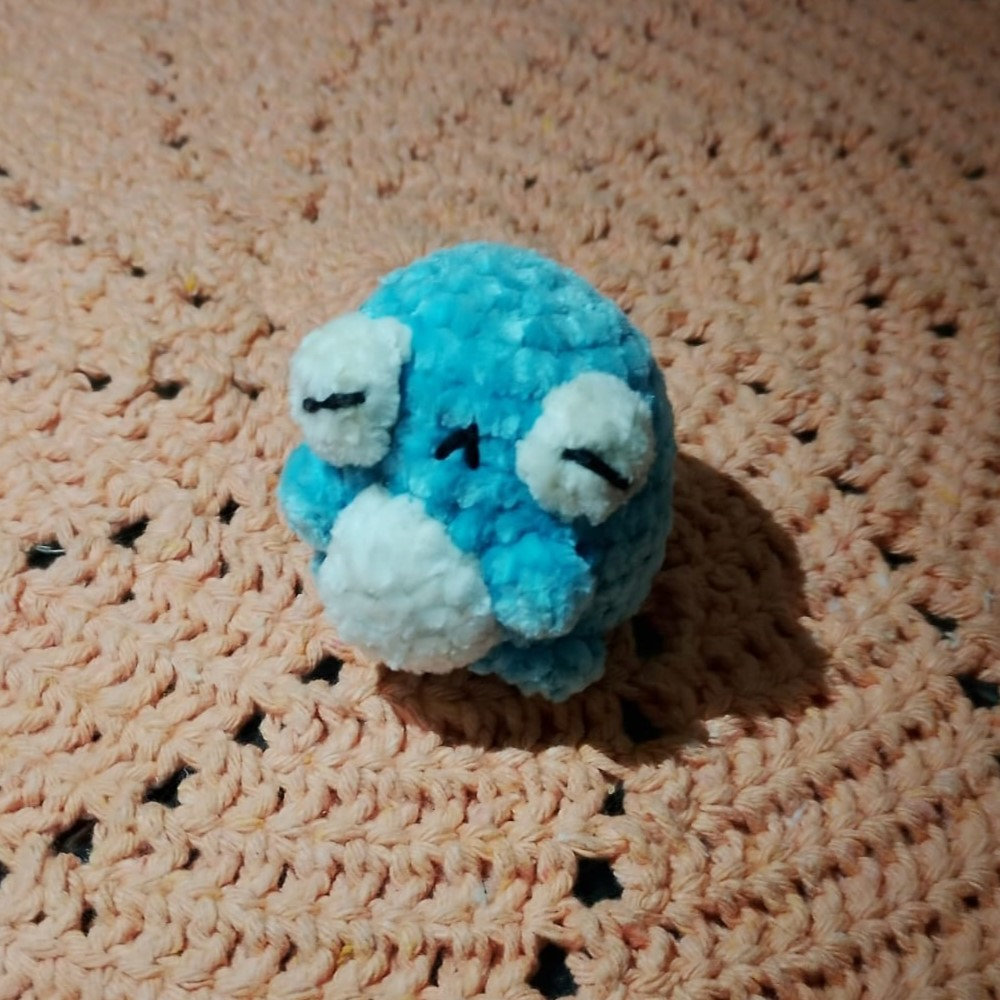
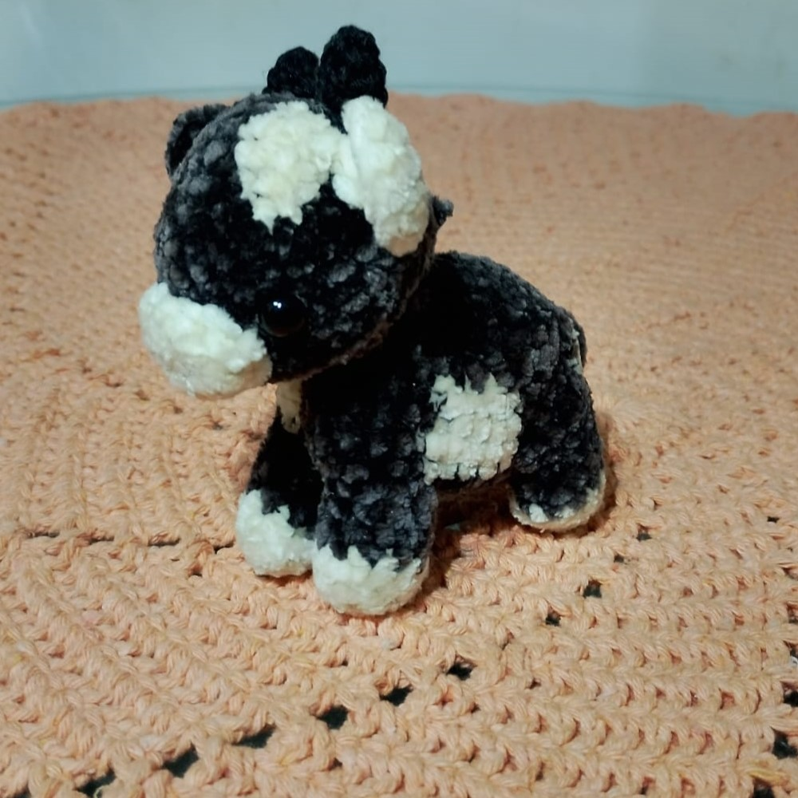
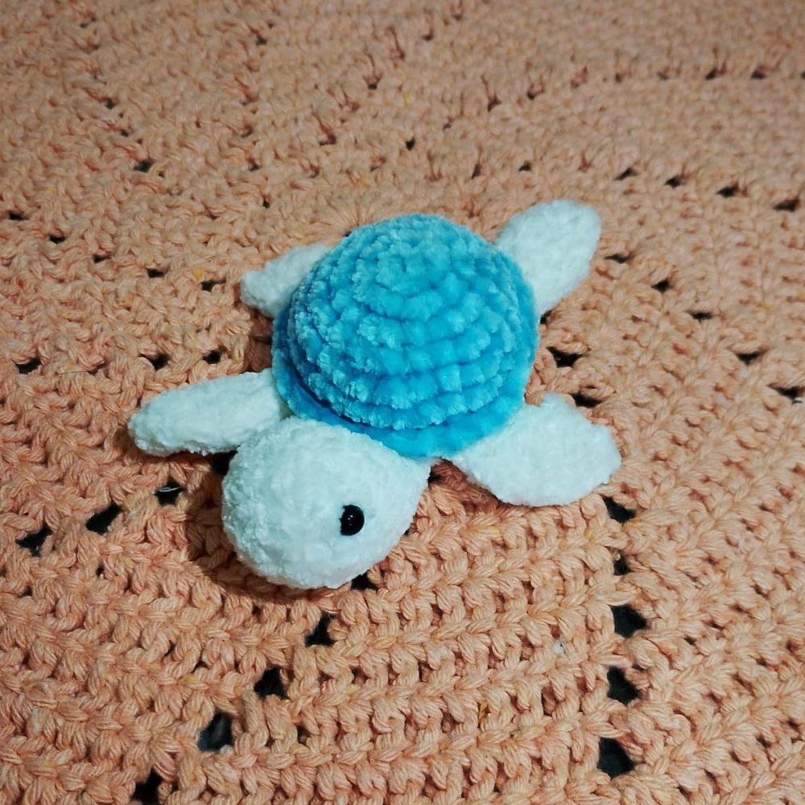

Os amigurumis personalizados são uma forma criativa de transformar uma ideia em uma peça única e exclusiva. A proposta é manter o formato base de um amigurumi, como por exemplo uma tartaruga, mas permitir total liberdade na personalização de cores, estilos, materiais e tamanho. Isso significa que cada peça pode ser adaptada ao gosto de quem encomenda, escolhendo desde combinações de cores mais suaves até tons vibrantes e diferentes padrões. Além disso, é possível alterar detalhes como acessórios, expressões e acabamentos, tornando o amigurumi ainda mais especial. Essa personalização valoriza o trabalho artesanal e garante que nenhuma peça seja igual à outra. Assim, o cliente participa diretamente da criação, tornando o produto final ainda mais significativo e único.





A criação de amigurumis permite o uso de diversos tipos de materiais, o que amplia ainda mais as possibilidades de personalização. Entre os fios mais utilizados estão o fio slim, que é mais fino e delicado, o chenille, conhecido por sua textura macia e aveludada, e os fios de pelúcia, que deixam as peças mais fofas. Também existem opções com brilho, que dão um toque especial, e fios soft, que proporcionam conforto ao toque. Além dos fios, há uma grande variedade de olhos de segurança, que podem variar em tamanho, cor e estilo, ajudando a dar personalidade ao amigurumi. Os focinhos também podem ser escolhidos de diferentes formas e acabamentos, contribuindo para a expressão da peça. Essa diversidade de materiais e detalhes permite criar amigurumis únicos, adaptados a diferentes estilos e preferências.